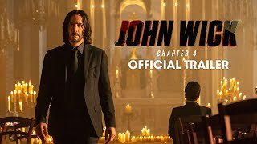
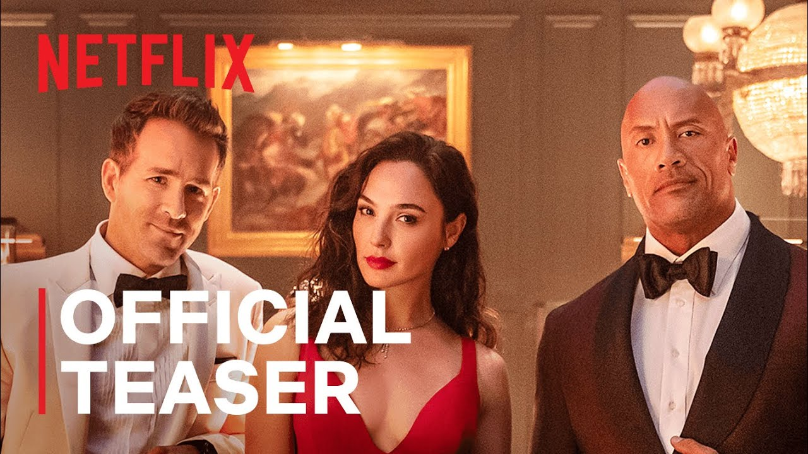

| Movie Name |
Movie Image |
Description |
| John Wick |
 |
John Wick: Chapter 4 is a 2023 American neo-noir action thriller film directed by Chad Stahelski and written by Shay Hatten and Michael Finch. The sequel to John Wick: Chapter 3 – Parabellum (2019) and the fourth installment in the John Wick franchise, it stars Keanu Reeves as the title character, alongside Donnie Yen, Bill Skarsgård, Laurence Fishburne, Hiroyuki Sanada, Shamier Anderson, Lance Reddick (in one of his final roles), Rina Sawayama, Scott Adkins, and Ian McShane. In the film, John Wick sets out to get revenge on the High Table and those who left him for dead. |
| Red Notice |
 |
Red Notice is a 2021 American action comedy film written and directed by Rawson Marshall Thurber starring Dwayne Johnson alongside Ryan Reynolds and Gal Gadot and Ritu Arya. It marks the third collaboration between Thurber and Johnson, following Central Intelligence (2016) and Skyscraper (2018). In the film, an FBI agent reluctantly teams up with a renowned art robber in order to catch an even more notorious robber |
| Extraction |
 |
Extraction is a 2020 American action thriller film directed by Sam Hargrave (in his feature directorial debut) and written by Joe Russo, based on the graphic novel Ciudad by Ande Parks, Joe Russo, Anthony Russo, Fernando León González, and Eric Skillman. The film's cast features Chris Hemsworth, Rudhraksh Jaiswal, Randeep Hooda (his international film debut), Golshifteh Farahani, Pankaj Tripathi and David Harbour. The film is about an Australian black ops mercenary whose mission to save an Indian crime lord's kidnapped son in Dhaka, Bangladesh goes awry when he is double-crossed. |